Velocity-defined entering and exiting cells organize along a spatial continuum. Open the Animations tab to watch the front pulse.
Sort design
E15S = GFP+ / ImageIT+ · E14S = GFP− / ImageIT−.
Marker positivity ≠ ongoing transcriptional hypoxia — many GFP+ cells have reverted, which is why not all GFP+ are velocity-persistent.
E15S GFP+
Marked pool. ~12% of tumor dynamics cells are persistent.
E14S GFP−
Unmarked pool. Immune-hot; front still appears where tumor sits.
front
exit → persist → enter → deep along an oxygen boundary.
What a front means
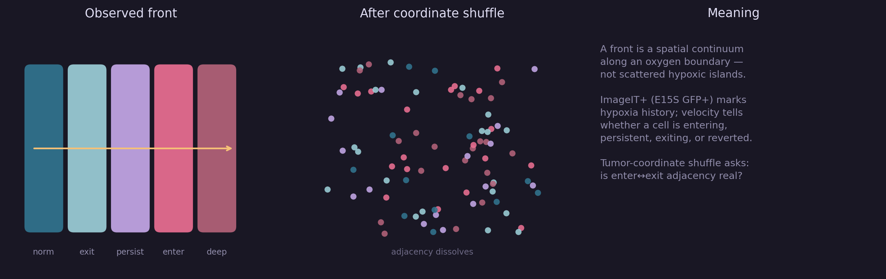
Observed continuum vs coordinate shuffle.
Animated front
GIFs of the hypoxia front pulsating, bridges lighting in waves, and the continuum traveling
exit → persist → enter → deep. Gold = front / bridges · foam = exiting · love = entering · iris = persistent.
Front pulse
High front-score neighborhoods breathe; entering and exiting cells pulse slightly out of phase.
E14S GFP−
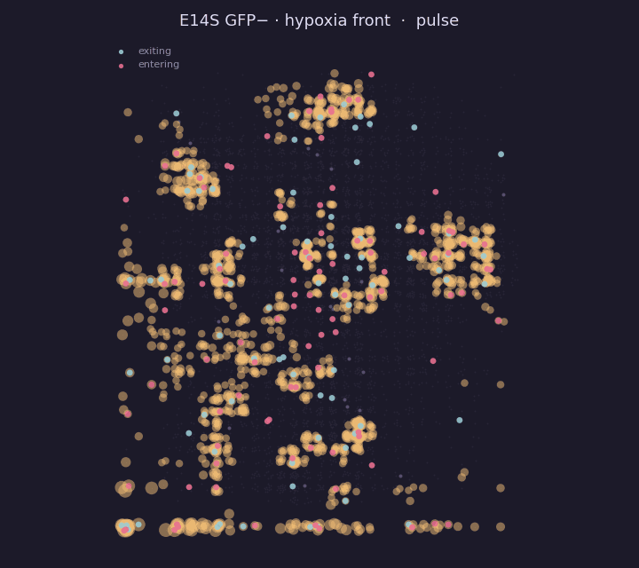
Front neighborhoods pulsing on the unmarked face.
E15S GFP+
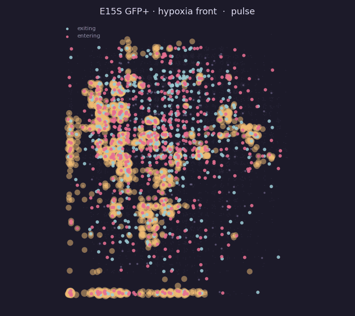
Same pulse inside the ImageIT+ marked pool.
Bridge pulse
Enter-deep ↔ exiting kNN bridges light in a traveling gold wave.
E14S
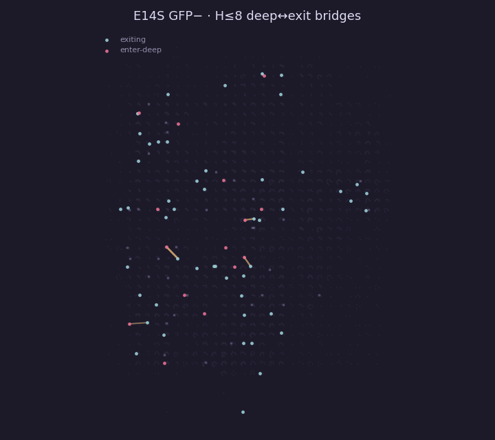
Deep↔exit bridges flickering along the front.
E15S
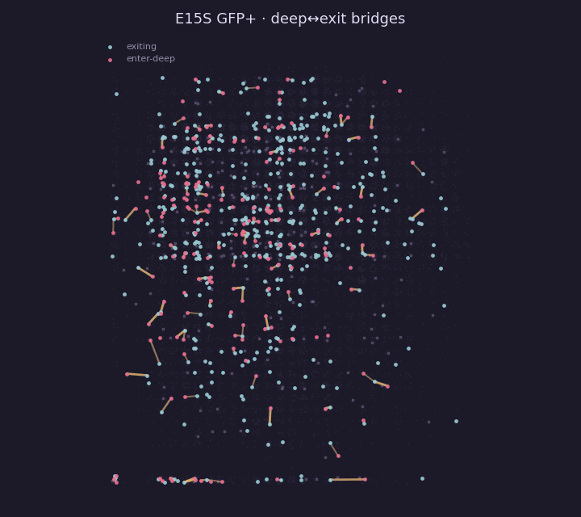
Bridge wave across the tumor/stroma core.
Continuum wave
Emphasis travels along the hypoxia continuum — a moving oxygen boundary, not static islands.
E14S
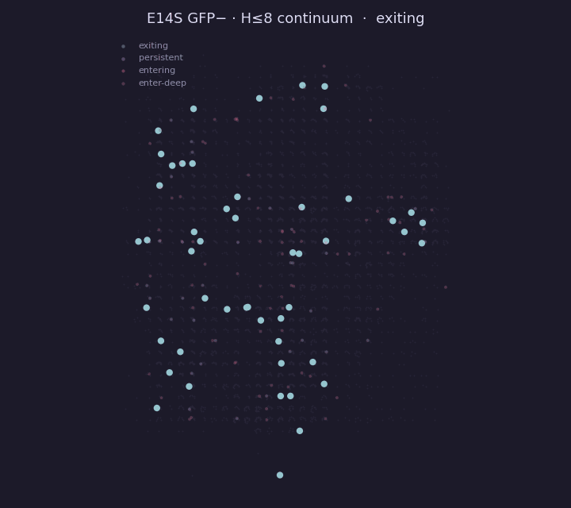
Wave of attention across dynamics states.
E15S
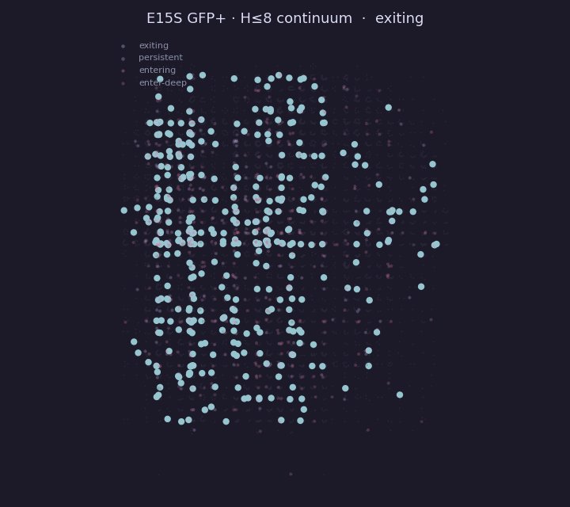
Continuum wave in the GFP+ gate.
Ribbon breathe
Local enter×exit co-presence field (front ribbon) expanding and contracting.
E14S
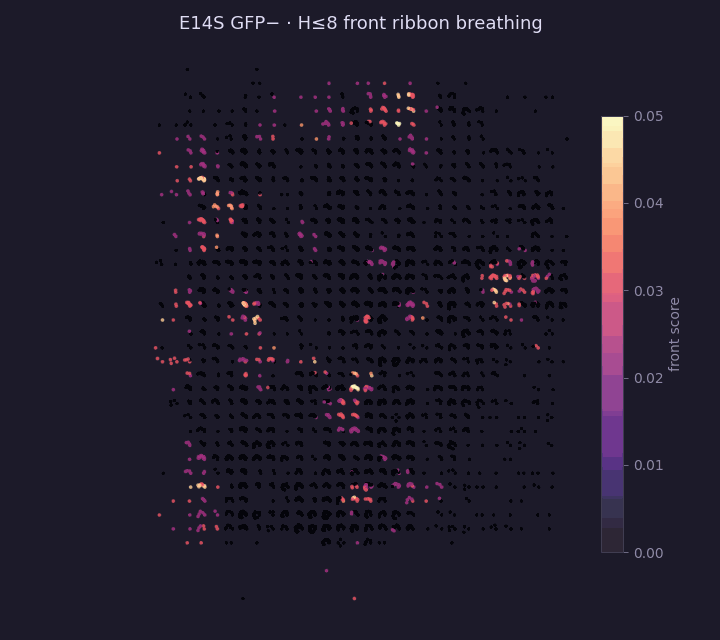
Front-score field breathing.
E15S
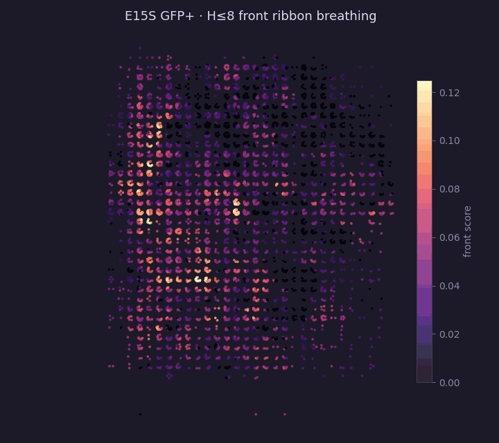
Front-score field breathing.
Static maps
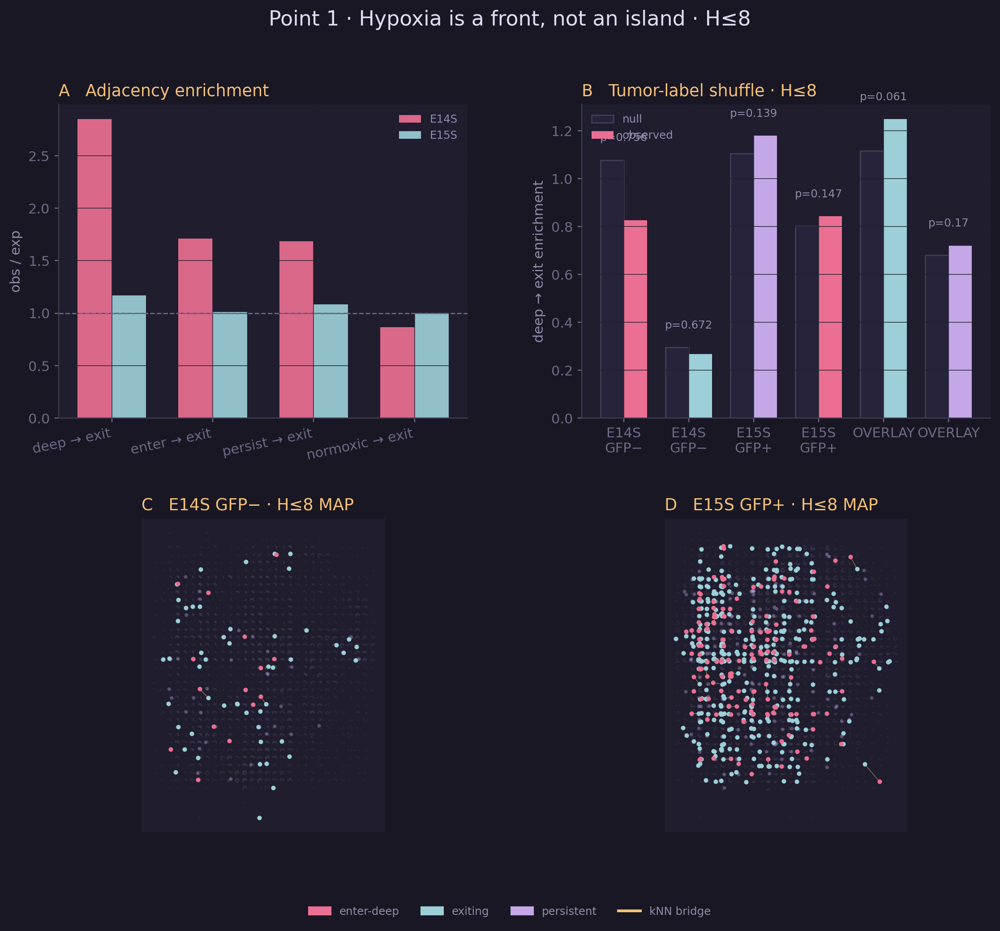
Summary board across both ImageIT gates.
E14S GFP− bridges.
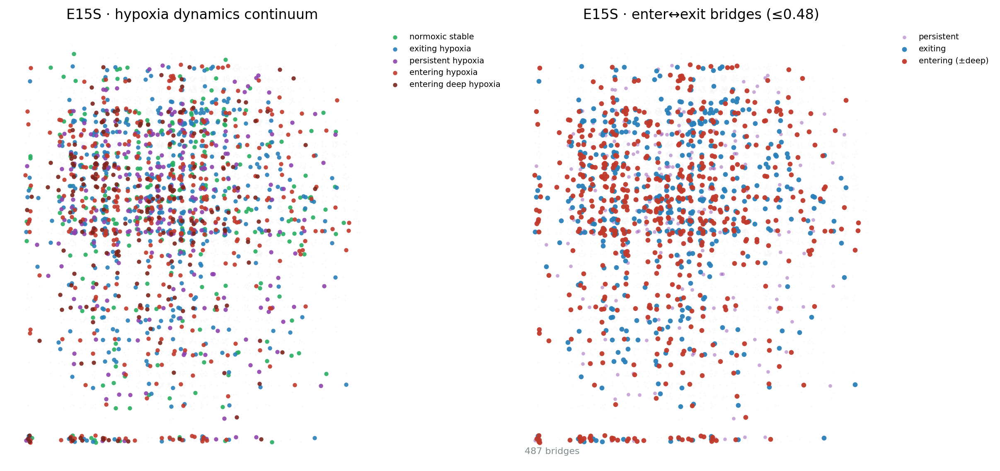
E15S GFP+ bridges.
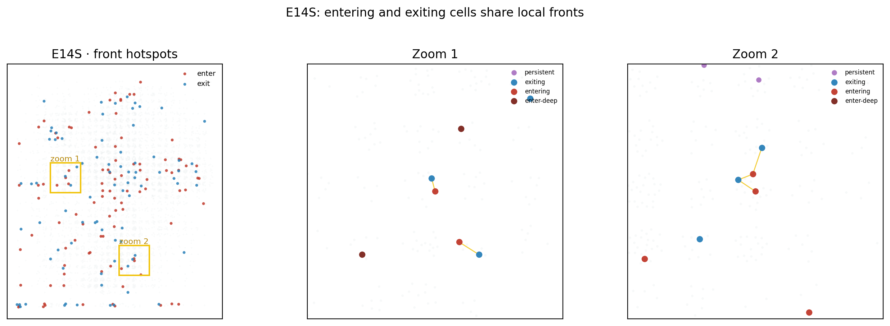
E14S hotspots.
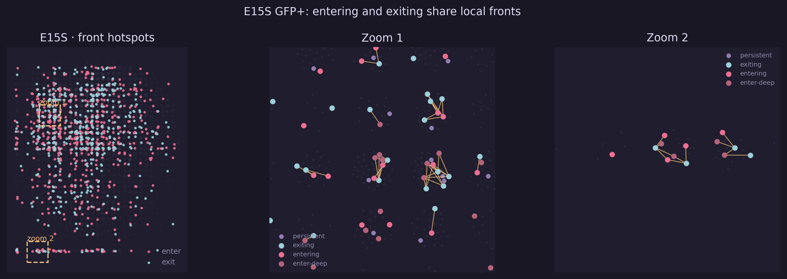
E15S hotspots.
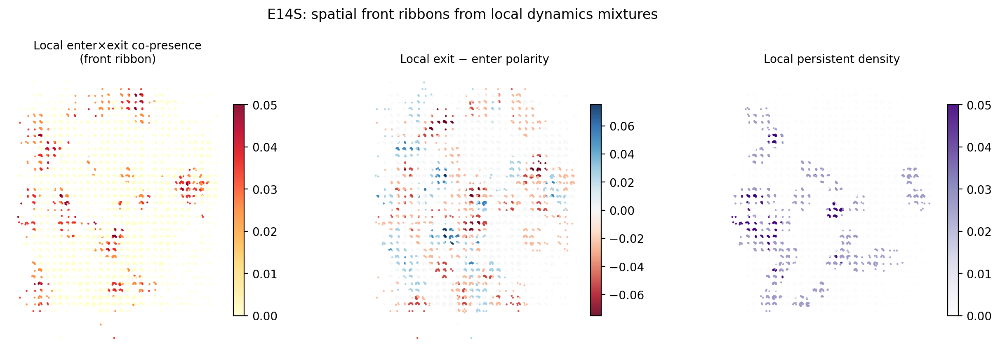
E14S local front geometry.
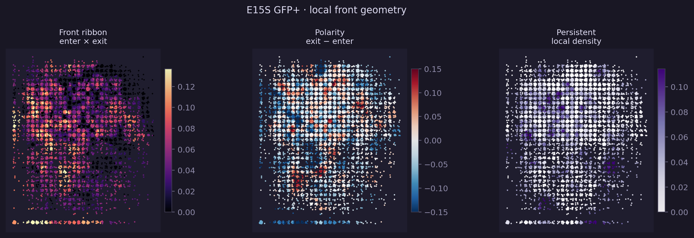
E15S local front geometry.
Microwell assignment entropy
Each microwell is a known pair (row_i, col_j) among
sbc1–42 × sbc97–138 (1764 wells). From raw spatial ADT UMIs,
p_row ∝ counts+α, p_col ∝ counts+α (α=0.05), and
P(well)=p_row·p_col. Per-cell entropy
H = H_row + H_col (bits) measures how peaked that posterior is.
7.19 / 7.31
Median H (bits) · E14S / E15S. Max = log₂(1764) ≈ 10.78.
0.07
Median MAP well probability — many cells remain ambiguous on ADT alone.
empty half
Zero-UMI halves → near-uniform posterior → high H (not pinned to well 1).
Entropy distribution
Left: joint microwell entropy. Middle: normalized by max. Right: ADT depth vs entropy.
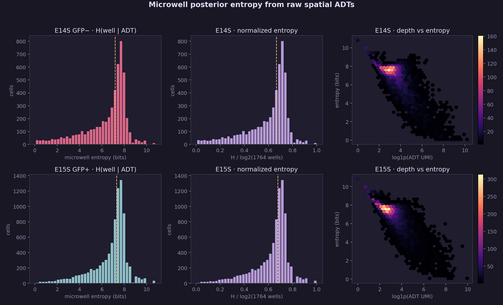
Per-cell H(well | ADT) for both ImageIT gates.
Empty halves vs signal
Cells missing an entire barcode half sit near the entropy ceiling; cells with both halves still show a broad mid-entropy mass.
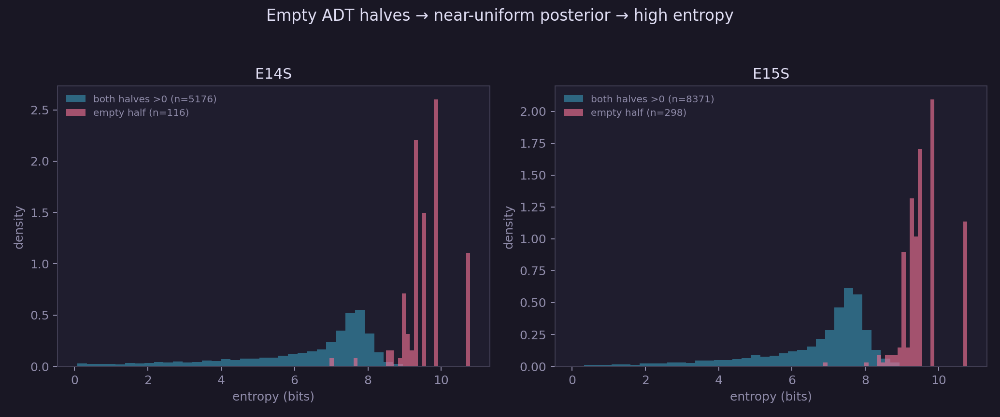
Density of entropy for empty-half vs both-halves cells.
Entropy on hard-assigned coordinates
Mapped onto the previous hard demux grid (for context). Bright = ambiguous posterior — including the artifactual first row/column from argmax-on-zeros.
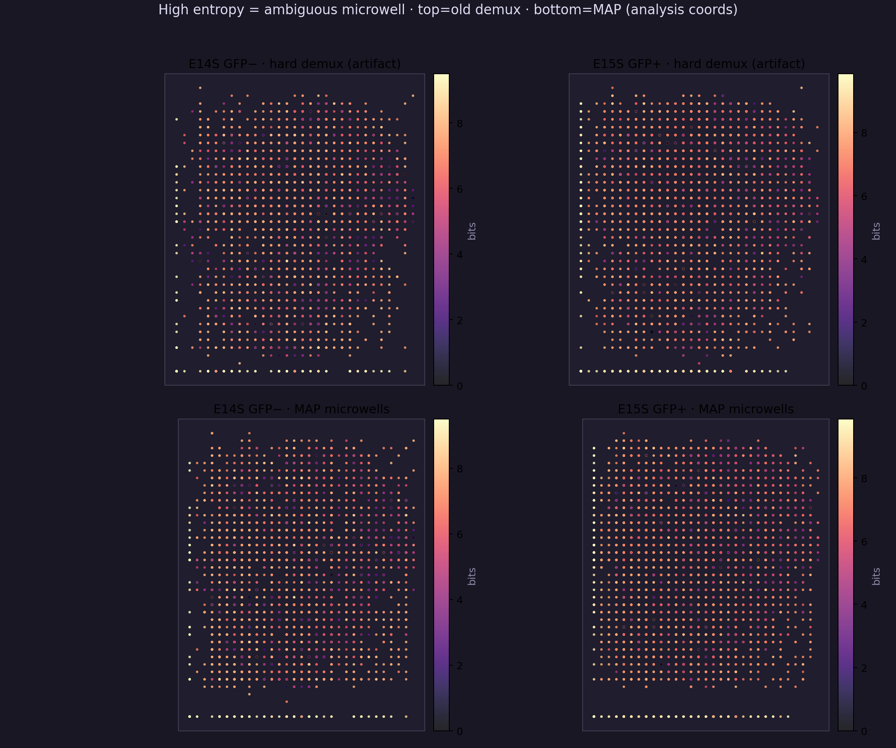
Entropy colored on hard spatial coordinates.
Front analysis · entropy H≤8
Cells kept if microwell posterior entropy H ≤ 8 bits
(12,108 / 13,961 = 86.7% · E14S 4,643 · E15S 7,465).
Coordinates = MAP microwells from raw ADTs (same chip grid).
E14S GFP− and E15S GFP+ are overlaid — same experiment / chip.
The row-1 / col-1 demux artifact line is removed.
Literature-framed claims from the H≤8 same-chip overlay.
Each point states what is established, what we add, and why it matters.
1. A velocity front, not HIF islands
Classical hypoxia is cast as diffusion-limited O₂ gradients and patchy niches.
Here, entering and exiting cells are opposite faces of one ribbon
(overlay deep→exit 1.25×; Moran's I front/polarity ≈ 0.66/0.64) — a moving oxygen interface resolved by RNA velocity, not a static hypoxia score.
Contiguous front ribbon and polarity field on the shared chip.
2. Fate mark ≠ ongoing hypoxia
ImageIT/GFP fate-mapping literature shows post-hypoxic cells can remain marked after reoxygenation and carry metastasis-prone memory.
In this experiment E15S = GFP+ by sort, yet only a minority are velocity-persistent — most marked cells have already exited or reverted transcriptionally.
3. Entry ≠ exit (programs + polarity)
Textbook: hypoxia → glycolysis; reoxygenation → OXPHOS.
Velocity DE instead shows entry = ISR/IEG/amino-acid stress and
exit = dual OXPHOS + glycolysis reboot (not a one-way flip), laid out as opposite polarity sides of the same front.
4. Persist is the dwell core off-ribbon
Persistent cells are under-represented on the top-20% enter×exit ribbon (≈18% vs ≈33–35% for enter/exit) — a transcriptional dwell/core along the continuum, consistent with necrotic/hypoxic core concepts but defined by dynamics rather than histology alone.
5. Immune skirt of the oxygen interface
1.50×
CAF on front ribbon (p≈0).
1.29×
Neutrophil on front ribbon (p≈0).
0.64×
CD8 depleted from front (p=0.022).
C1qc-TAM depleted from front/core fields; Spp1-TAM mildly front/exit-biased.
On shared wells, E15 hypoxic tumor co-occurs with E14 neutrophils (OR 1.86, Fisher p=4.6×10⁻⁵) — a cross-gate niche only visible because both sorts sit on one chip.
This aligns with CD8 distancing from hypoxia and neutrophil/SPP1 association with hypoxic niches, while adding a front-vs-core split and same-chip gate complementarity.
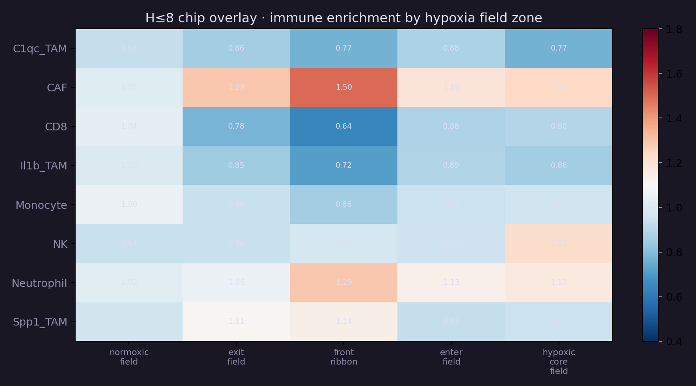
Immune enrichment across hypoxia field zones (H≤8 overlay).
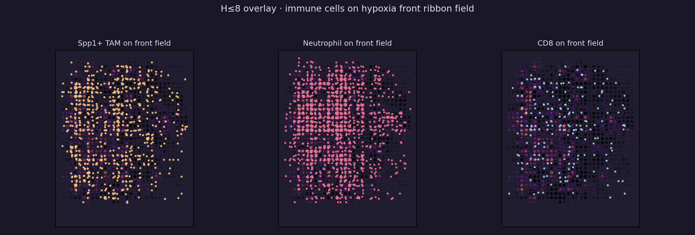
Spp1-TAM, neutrophils, and CD8 over the front-score field.
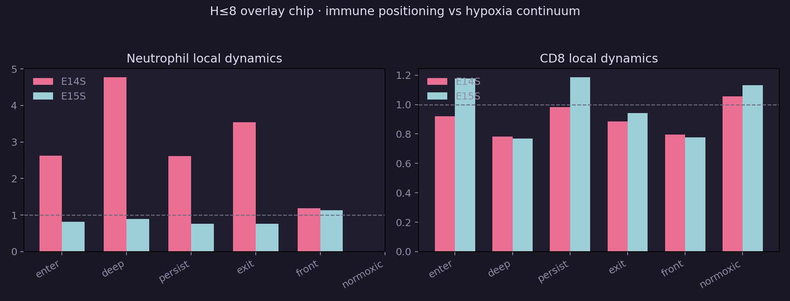
Neutrophil vs CD8 local dynamics affinity by gate.
Coordinate-shuffle permutation
Shuffling coordinates among fixed positions ≡ shuffling dynamics labels on the fixed kNN graph. n = 2000. Proper null = tumor coordinates only.